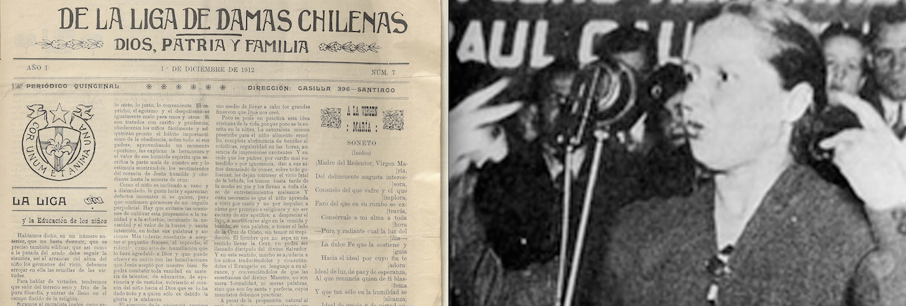

Feminism and the Liga de Damas Chilenas

Left Photo: Biblioteca Nacional de Chile
Right Photo: Chile Pais de Mujeres
In the late 1900s, Catholic feminism was on the rise and was initiated by the intersection of faith, class, and gender structures within Chilean society. The conservative and patriarchal hierarchy that defines the make up of the Catholic Church played a large role in the uprising of this movement and the many advocates for change, including the Liga de Damas Chilenas. The Liga de Damas Chilenas (beginning in 1912) became a source for upper-class Chilean women to push for change and question the framework of their society. To get a broader understanding of Catholic Feminism in Chile, this section will cover the Liga de Damas Chilenas and the ways in which class, gender, and faith played a role in their achievements during the rise of feminism in response to Catholic social frameworks.
The Liga de Damas Chilenas
The Liga de Damas Chilenas was made up of upper-class Catholic Chilean women in order to address social issues pertaining to its well-educated and wealthy members. The organization was centered on charity, moral reform, and the maintaining of traditional conservative values. Led by Juan Enrique Concha Subercaseaux, the Liga de Damas Chilenas published their views on the "Eco", a periodical in which they expressed their social/moral reforms as well as their goal in helping society through charity and moral teachings. Specifically, their charity work extended to supporting women and families that dealt with poverty. Their expressed moral views included the belief that women were the guardians of the home; in addition, they stressed that the majority of societal problems in existence at the time were results of the abandonment of family values by men who gave into alcoholism, for example, and women who lived consumerist lives of continuous spending.
“Not surprisingly, the Liga and the men who spoke to it worried...about the moral collapse of the nation on working-class men who drank too much and abandoned their families and upper-class women who were spending too much money on dresses and frivolities” (Monteón).
Class and Gender
Despite there charity for the poor, class privilege in the Liga was prominent, as its members believed themselves to be morally superior and therefore bestowed with a duty to uplift society as supposed perfectionists in morality. This created a conflict in the Liga's feminist ideals and class privelege. A danger to morality as seen repeatedly throughout their writings in "Eco" was lujo (luxury). The increase in luxurious ways of living and spending was what the Liga believed to be the undermining of order both socially and morally. In addition, the rise in factory work amongst women threatened the traditional domestic roles once more.
“...the dangers of lujo, what in the United States was called conspicuous consumption”
“The Liga expressed concern over upper-class women abandoning domestic service for the factories” (Monteón).
Conservative Feminism
Due to the conservative nature of the Liga, their beliefs remained constrained under the traditional gender binary in which women followed household duties and assumed the role of caregives/mothers. They did not challenge patriarchal Church structures in a direct way; they focused in on moral/individual reform rather on broader social issues such as inequality.
"The Liga...raised issues about gender roles and class conflict, but these debates remained constrained within the conservative Catholic framework” (Monteón).
Modern Influences
The Liga’s conservative feminism set the stage for later debates about women’s roles in the Church and society. They highlighted the tension between advocating for societal change while maintaining the privilege of the elite. This legacy shapes Chilean Catholic feminism and its intersectionality of class and gender.
“The Liga’s concerns about morality and class continue to shape the broader conversation about gender and Catholicism in Chile”
“Her general presentation of Chile in this era owes a great deal to James Morris, whose book on the ‘social question’...continues to provide a guide to the elite views of working people in the early twentieth century” (Monteón).